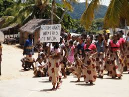

Hello, I would like to talk about how women here in Madagascar celebrate their party.
Therefore, in this page, we are going to look at the way of celebrating.
First of all, all the women have to prepare themselves before the party starts.
What I mean by preparing is, they have their own theme, dance, each village.
Even they make up their faces too.

During the parade everyone has different themes for the way of clothing.
It depends on where they are from,that means there are many types of tribes in Madagascar,
so they follows that as well.
Then, they go to the city hall or a place where it is held.
There must be a speech. The party will be ended by performing.
Besides, it is not only seeing them celebrating but knowing that we all have the same right.
I hope, you would enjoy reading this page. Thanks.